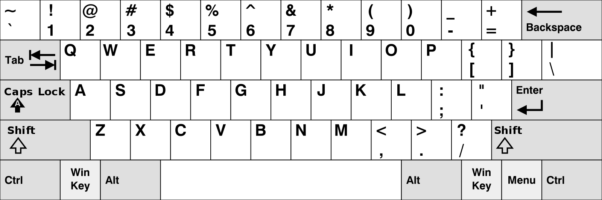
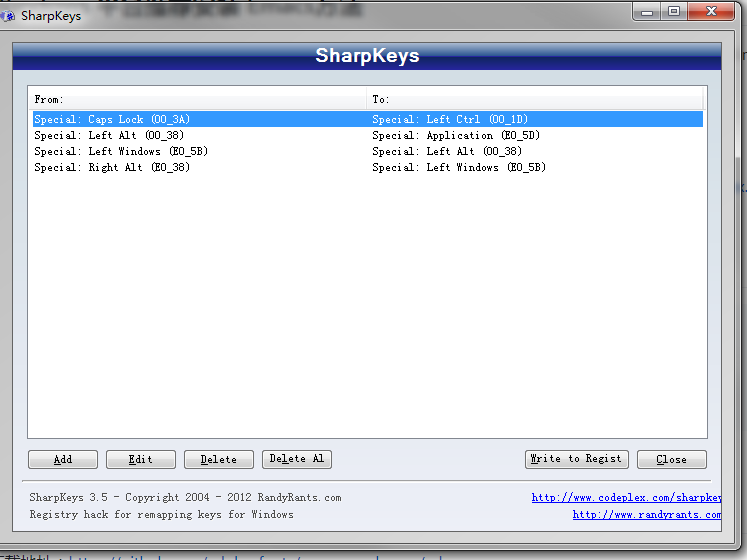
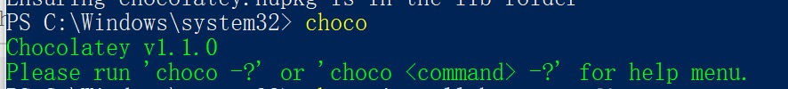

Master Emacs in 21 Days
Table of Contents
21 天学会 Emacs（2022 Edition）
GitHub Emacs Rocks 作者 zilongshanren 编者 li-xinyang, lsytj0413
在这一季中我们计划用 21 天学习 Emacs 的使用。从基础安装开始到可以 运用到工作生产环节中。为了确保学习质量，请务必完成和理解计划中的每一项学习任务。(新的系列全部使用 Vallina Emacs)
Update（2022 年 1 月 15 日）: 本系列视频教程最早录制于 2016 年，距今已经有 5 年多的历史了， 在此期间 Emacs 社区又进化了非常多。出现了更活跃的 Doom Emacs 社区配置，拥有 GCC Emacs，所以 现在回头来看当时的视频教程，显得多少有些过时了。以前 21 天的视频教程显得有些冗长，我打算在 2022 年 更新所有这些视频教程，并且控制每一个视频的时长（20 分钟左右），希望这个系列教程能够帮助到大家。
本视频的代码仓库： https://gitee.com/emacs-china/emacs.d
原来 21 天的视频地址：
原来 21 天的教程地址：
第一天：准备开始(安装与改键)
视频地址如下：
说在最前面
如果你第一次听说 Emacs 你可以在性感的 Emacs（Emacs is Sexy）一文中找到使用它的理 由！我相信你一定会被它的强大所吸引。
如果你还没有安装 Emacs 可以在 Doom Emacs 的安装文档中查找安装方法，根据你所使用的操作系统去下载对应 版本的 Emacs 就行了。（新手不推荐从源码进行编译安装，因为这会比较困难）
因为考虑到比较多的用户之前可能没有接触过 Mac 或者 Linux，所以新的系列视频我会直接使用 Windows 系统来 进行演示。Windows 下配置 Emacs 环境可以参考我之前在论坛写的文章。
由于 Windows 系统的一些限制，某一些 Emacs 的功能（Magit，lsp 等）表现并不是很好（主要指的是性能），读者可以 尝试安装 WLS 来使用 Emacs，具体方法可以参考这篇文章。
在开始本教程之前请务必先完成 Emacs 提供的官方教程（完成时间大约 30 分钟），它可
以通过使用 C-h t （同时按住 Ctrl 与 h 键，接着按 t 键 t 在这里代表 tutorial）
在 Emacs 中直接将其打开。（当然你也可以在观看视频之后再去阅读 Emacs Tutorial）
Emacs Lisp 是 Emacs 所用的编程语言，你可以在阅读这篇教程（Learn X in Y Minutes） 后很快地了解它的基础用法。
基础操作
在讲解基本操作之前，先跟大家讲一下改键。改键的作用除了可以让你的小拇指更健康以外，还可以统一我们的交流语言， 让大家后面学习过程可以更轻松。（这部分如果没有相关基础，强烈建议先看视频是怎么操作的）
Windows 键盘布局：

Windows 改键方法：
使用 SharpKeys 来把 Left Window 键改成 Left Alt 键，Left Alt 键改成 App 键，大小写键改成 Ctrl 键。

Emacs 默认 Alt 键就是 Meta，而 App 键我们改成 super 键，可以通过下面的 Elisp 代码来完成。
(setq w32-apps-modifier 'super) ; 通过SharpKeys改成了 Application
Mac 键盘布局：
Mac 下面大小写键改成 Ctrl 键（参考视频），Mac 系列只需要修改这个按键，其他的按键可以通过 Elisp 来修改：
(setq mac-option-modifier 'meta
mac-command-modifier 'super)
常见符号所代表的意义如下
- M(eta)：统一改到 option 键（Mac），left windows 键（Windows）
- s(uper)：统一改到 command 键（Mac），left Alt 键（windows）
- S(Shift)：不用修改
- C(trl)：统一改成 Caps Lock（大小写切换键，这样可以拯救你的小拇指健康）
光标的移动是编辑器中最常用的操作所以必须熟知。（只需要掌握这些基础的光标移动操作，后续我会介绍 Vim 的光标移动操作， 我个人认为 Vim 的光标移动更高效，大家先熟知这几个常用的移动命令即可。）
C-f为前移一个字符，f代表 forward。C-b为后移一个字符，b代表 backward。C-p为上移至前一行，p代表 previous。C-n为上移至下一行，n代表 next。C-a为移至行首，a代表 ahead。C-e为移至行尾，e代表 end。
为什么不使用鼠标而去学习这些奇怪的按键组合呢？因为这些按键在某些时候是非常高效的，比如在 Emacs 里面，Shell 终端里面， 甚至整个 Mac 系统都内置了这种按键。我本人在使用 Vim 或者其他 IDE 的时候也会使用 Emacs 的这套按键。
*学习可以迁移的技能*，这一点非常重要！一旦学会了将可以终身受用。
现在我们可以把 Mac 下面的复制、粘贴、剪切、全选等命令移植到 Emacs 中来了，并且这一套按键是跨平台的。
(global-set-key (kbd "s-a") 'mark-whole-buffer) ;;对应Windows上面的Ctrl-a 全选
(global-set-key (kbd "s-c") 'kill-ring-save) ;;对应Windows上面的Ctrl-c 复制
(global-set-key (kbd "s-s") 'save-buffer) ;; 对应Windows上面的Ctrl-s 保存
(global-set-key (kbd "s-v") 'yank) ;对应Windows上面的Ctrl-v 粘贴
(global-set-key (kbd "s-z") 'undo) ;对应Windows上面的Ctrol-z 撤销
(global-set-key (kbd "s-x") 'kill-region) ;对应Windows上面的Ctrol-x 剪切
第二天： 打造属于你的记事本
内置功能
Emacs 功能强大，但是部分功能默认情况下并未开启。下面就有几个例子，
编辑器内显示行号可使用 M-x linum-mode 来开启。
获取帮助
Emacs 是一个富文档编辑器（Self document, extensible editor）而下面的三种方法在学 习 Emacs 的过程中也非常重要。他们分别是，
C-h k寻找快捷键的帮助信息C-h v寻找变量的帮助信息C-h f寻找函数的帮助信息
给 Windows 右键菜单添加 OpenWithEmacs 功能
Windows Registry Editor Version 5.00 [HKEY_CLASSES_ROOT\*\shell] [HKEY_CLASSES_ROOT\*\shell\openwemacs] @="&Edit with Emacs" [HKEY_CLASSES_ROOT\*\shell\openwemacs\command] @="C:\\emax64\\bin\\emacsclientw.exe -n \"%1\"" [HKEY_CLASSES_ROOT\Directory\shell\openwemacs] @="Edit &with Emacs" [HKEY_CLASSES_ROOT\Directory\shell\openwemacs\command] @="C:\\emax64\\bin\\emacsclientw.exe -n \"%1\""
使用这个 OpenWithEmacs 的功能，Emacs 需要开启 Server Mode，代码如下：
(server-mode 1)
第三天：Elisp 基础、Org 基础和包管理器
学习基础 Elisp
请务必完成这篇教程（Learn X in Y Minutes）来了解 Elisp 的使用（阅读时间大约 15 分钟），你也可以在这里找到它的中文版。Emacs Lisp 为一个函数式的语言，所以它全部 功能都是由函数来实现的。
下面为一些简单的例子
;; 2 + 2
(+ 2 2)
;; 2 + 3 * 4
(+ 2 (* 3 4))
;; 定义变量
(setq name "username")
(message name) ; -> "username"
;; 定义函数
(defun func ()
(message "Hello, %s" name))
;; 执行函数
(func) ; -> Hello, username
;; 设置快捷键
(global-set-key (kbd "<f1>") 'func)
;; 使函数可直接被调用可添加 (interactive)
(defun func ()
(interactive)
(message "Hello, %s" name))
开始 Hacking！
Emacs 的配置文件默认保存在 ~/.emacs.d/init.el 文件中。（如果其不存在可自行创建，
配置文件也可保存在 ~/.emacs 文件中，他们之间的区别我们会在后面做讨论）
注意： 如果希望把配置放在 ~/.emacs.d/init.el 文件中，那么需要手工删除
~/.emacs 文件。
在开始配置之前让我们先来区别 Emacs 中 Major Mode 与 Minor Mode 的区别。Major
Mode 通常是定义对于一种文件类型编辑的核心规则，例如语法高亮、缩进、快捷键绑定等。
而 Minor Mode 是除去 Major Mode 所提供的核心功能以外的额外编辑功能（辅助功能）。
例如在下面的配置文件中 tool-bar-mode 与 linum-mode 等均为 Minor Mode*。
简单来说就是，一种文件类型同时只能存在一种 Major Mode 但是它可以同时激活一种或多
种 Minor Mode。如果你希望知道当前的模式信息，可以使用 C-h m 来显示当前所有开启
的全部 Minor Mode 的信息。
简单的编辑器自定义
下面是一些简单的编辑器配置信息，你需要做的就是将其写入你的配置文件中
（ ~/.emacs.d/init.el ）即可。
;; 关闭工具栏，tool-bar-mode 即为一个 Minor Mode
(tool-bar-mode -1)
;; 关闭文件滑动控件
(scroll-bar-mode -1)
;; 显示行号
(global-linum-mode 1)
;; 更改光标的样式（不能生效，解决方案见第二集）
(setq cursor-type 'bar)
(icomplete-mode 1)
;; 快速打开配置文件
(defun open-init-file()
(interactive)
(find-file "~/.emacs.d/init.el"))
;; 这一行代码，将函数 open-init-file 绑定到 <f2> 键上
(global-set-key (kbd "<f2>") 'open-init-file)
在每次编辑配置文件后，刚刚做的修改并不会立刻生效。这时你需要重启编辑器或者重新加
载配置文件。重新加载配置文件你需要在当前配置文件中使用 M-x load-file 双击两次
回车确认默认文件名，或者使用 M-x eval-buffer 去执行当前缓冲区的所有 Lisp 命令。
你也可以使用 C-x C-e 来执行某一行的 Lisp 代码。这些可使刚刚修改的配置文件生效。
当然你也可以将这些函数绑定为快捷键。
插件管理
使用默认的插件管理系统（可在菜单栏 Options > Manage Emacs Packages 中找到）安
装 Company 插件，他是一个用于代码补全的插件。它的名字代表补全一切的意思（ Comp
lete Any thing）。因为默认的插件管理系统提供的插件十分有限，所以我们会在之后的
几天中继续将其强化。
使用的下面的配置将 Company-mode 在全局模式下激活
; 开启全局 Company 补全
(global-company-mode 1)
;; company mode 默认选择上一条和下一条候选项命令 M-n M-p
(define-key company-active-map (kbd "C-n") 'company-select-next)
(define-key company-active-map (kbd "C-p") 'company-select-previous)
Org-mode
简单的 Org-mode 使用，它可以列出提纲，并方便地使用 tab 键来对其进行展开与关闭。
C-c C-t 可以将一个条目转换成一条待办事件。
* 为一级标题
** 为二级标题
*** 为三级标题并以此类推
第四天：增强 Emacs 补全，让 Hacking 更加有趣和可视化
关于 lexical binding
;;在文件最开头添加地个 文件作用域的变量设置，设置变量的绑定方式
;; -*- lexical-binding: t -*-
(let ((x 1)) ; x is lexically bound.
(+ x 3))
⇒ 4
(defun getx ()
x) ; x is used free in this function.
(let ((x 1)) ; x is lexically bound.
(getx))
;;error→ Symbol's value as variable is void: x
关于lexical binding 更多的细节，可以自行阅读 Emacs 的官方文档。
;; 更改显示字体大小 16pt
;; http://stackoverflow.com/questions/294664/how-to-set-the-font-size-in-emacs
(set-face-attribute 'default nil :height 160);;
;;让鼠标滚动更好用
(setq mouse-wheel-scroll-amount '(1 ((shift) . 1) ((control) . nil)))
(setq mouse-wheel-progressive-speed nil)
配置 gnu 和 melpa 镜像
在进行美化之前我们需要配置插件的源（默认的源非常有限），最常使用的是 MELPA
（Milkypostman's Emacs Lisp Package Archive）。它有非常多的插件（3000 多个插件）。
添加源后，我们就可以使用 M-x package-list-packages
来查看所有 MELPA 上的插件了。在表单中可以使用 i 来标记安装 d 来标记删除，
U 来更新，并用 x 来确认。你也可以使用 u 来撤销标记操作。
你可以直接将下面的代码复制到你的配置文件顶端，从而直接使用 Melpa 作为插件的源。
(require 'package)
(setq package-archives '(("gnu" . "http://elpa.zilongshanren.com/gnu/")
("melpa" . "http://elpa.zilongshanren.com/melpa/")))
(package-initialize)
;;防止反复调用 package-refresh-contents 会影响加载速度
(when (not package-archive-contents)
(package-refresh-contents))
;;modeline上显示我的所有的按键和执行的命令
(package-install 'keycast)
(keycast-mode t)
增强 minibuffer 补全：vertico 和 Orderless
(package-install 'vertico)
(vertico-mode t)
(package-install 'orderless)
(setq completion-styles '(orderless))
配置 Marginalia 增强 minubuffer 的 annotation
(package-install 'marginalia)
(marginalia-mode t)
minibuffer action 和自适应的 context menu：Embark
(package-install 'embark)
(global-set-key (kbd "C-;") 'embark-act)
(setq prefix-help-command 'embark-prefix-help-command)
增强文件内搜索和跳转函数定义：Consult
(package-install 'consult)
;;replace swiper
(global-set-key (kbd "C-s") 'consult-line)
;;consult-imenu
第五天：手动安装插件和使用外部程序
手工安装插件和更多 Emacs 内置功能定制
如果你想深入学习 Emacs Lisp 可以阅读 GNU 提供的 An Introduction to Programming
in Emacs Lisp 。（也可以 M-x info 然后选择 Emacs Lisp Intro）
我们先解决前一天中遇到的一些问题。首先是在对象是一个缓冲区局部变量（Buffer-local
variable）的时候，比如这里的 cursor-type ，我们需要区分 setq 与
setq-default ： setq 设置当前缓冲区（Buffer）中的变量值， setq-default 设
置的为全局的变量的值（具体内容可以在 StackOverflow 找到）。下面是一个例子，用于
设置光标样式的方法。
(setq-default cursor-type 'bar)
(show-paren-mode t)
;;另外一件安装插件的方法
(add-to-list 'load-path (expand-file-name "~/.emacs.d/awesome-tab/"))
(require 'awesome-tab)
(awesome-tab-mode t)
(defun awesome-tab-buffer-groups ()
"`awesome-tab-buffer-groups' control buffers' group rules.
Group awesome-tab with mode if buffer is derived from `eshell-mode' `emacs-lisp-mode' `dired-mode' `org-mode' `magit-mode'.
All buffer name start with * will group to \"Emacs\".
Other buffer group by `awesome-tab-get-group-name' with project name."
(list
(cond
((or (string-equal "*" (substring (buffer-name) 0 1))
(memq major-mode '(magit-process-mode
magit-status-mode
magit-diff-mode
magit-log-mode
magit-file-mode
magit-blob-mode
magit-blame-mode)))
"Emacs")
((derived-mode-p 'eshell-mode)
"EShell")
((derived-mode-p 'dired-mode)
"Dired")
((memq major-mode '(org-mode org-agenda-mode diary-mode))
"OrgMode")
((derived-mode-p 'eaf-mode)
"EAF")
(t
(awesome-tab-get-group-name (current-buffer))))))
其次就是它使用到了 quote, 它其实就是我们之前常常见到的 ' （单引号）的完全体。
因为它在 Lisp 中十分常用，所以就提供了简写的方法。
;; 下面两行的效果完全相同的
(quote foo)
'foo
quote 的意思是不要执行后面的内容，返回它原本的内容（具体请参考下面的例子）
(print '(+ 1 1)) ;; -> (+ 1 1)
(print (+ 1 1)) ;; -> 2
更多关于 quote 的内容可以在这里找到，或者在这里找到 StackOverflow 上对于它的讨论。
因为通常我们的配置文件以及项目文件均使用版本控制系统，所以自动生成的备份文件就显
得有些多余。我们还可以禁止 Emacs 自动生成备份文件，例如 init.el~ 。（ ~ 为后
缀的文件为自动生成的备份文件）我们可以使用下面的方法将其关闭。
(setq make-backup-files nil)
使用下面的配置来加入最近打开过文件的选项让我们更快捷的在图形界面的菜单中打开最近 编辑过的文件。
(require 'recentf)
(recentf-mode 1)
(setq recentf-max-menu-item 10)
;; 这个快捷键绑定可以用之后的插件 counsel 代替
;; (global-set-key (kbd "C-x C-r") 'recentf-open-files)
require 的意思为从文件中加载特性，你可以在杀哥的网站读到关于 Emacs Lisp 库系统
的更多内容，文章在这里。
使用下面的配置文件将删除功能配置成与其他图形界面的编辑器相同，即当你选中一段文字 之后输入一个字符会替换掉你选中部分的文字。
(delete-selection-mode 1)
下面的这些函数可以让你找到不同函数，变量以及快捷键所定义的文件位置。因为非常常用 所以我们建议将其设置为与查找文档类似的快捷键（如下所示），
find-function（C-h C-f）find-variable（C-h C-v）find-function-on-key（C-h C-k）
使用外网命令行工具
下载安装 emax，配置 emacs 加载路径
(progn
(defvar emax-root (concat (expand-file-name "~") "/emax"))
(defvar emax-bin (concat emax-root "/bin"))
(defvar emax-bin64 (concat emax-root "/bin64"))
(setq exec-path (cons emax-bin exec-path))
(setenv "PATH" (concat emax-bin ";" (getenv "PATH")))
(setq exec-path (cons emax-bin64 exec-path))
(setenv "PATH" (concat emax-bin64 ";" (getenv "PATH")))
(setq emacsd-bin (concat user-emacs-directory "bin"))
(setq exec-path (cons emacsd-bin exec-path))
(setenv "PATH" (concat emacsd-bin ";" (getenv "PATH")))
;;可选安装msys64
;;下载地址: http://repo.msys2.org/mingw/sources/
(setenv "PATH" (concat "C:\\msys64\\usr\\bin;C:\\msys64\\mingw64\\bin;" (getenv "PATH")))
;; (dolist (dir '("~/emax/" "~/emax/bin/" "~/emax/bin64/" "~/emax/lisp/" "~/emax/elpa/"))
;; (add-to-list 'load-path dir))
)
使用 M-x shell 来学习命令行操作，可以参考 https://missing.csail.mit.edu/2020/ 来学习，living in Emacs。
第六天：Emacs 作为超级前端
使用 Emacs 来打开文件管理器
(shell-command-to-string "explorer.exe C:\\")
(shell-command-to-string "explorer.exe ~/.emacs.d")
(shell-command-to-string
(encode-coding-string
(replace-regexp-in-string "/" "\\\\"
(format "explorer.exe %s" (expand-file-name "~/.emacs.d")))
'gbk))
(defun consult-directory-externally (file)
"Open FILE externally using the default application of the system."
(interactive "fOpen externally: ")
(if (and (eq system-type 'windows-nt)
(fboundp 'w32-shell-execute))
(shell-command-to-string (encode-coding-string (replace-regexp-in-string "/" "\\\\"
(format "explorer.exe %s" (file-name-directory (expand-file-name file)))) 'gbk))
(call-process (pcase system-type
('darwin "open")
('cygwin "cygstart")
(_ "xdg-open"))
nil 0 nil
(file-name-directory (expand-file-name file)))))
(define-key embark-file-map (kbd "E") #'consult-directory-externally)
;;打开当前文件的目录
(defun my-open-current-directory ()
(interactive)
(consult-directory-externally default-directory))
增强 embark 和 consult，批量搜索替换大杀器
(package-install 'embark-consult)
(package-install 'wgrep)
(setq wgrep-auto-save-buffer t)
(eval-after-load
'consult
'(eval-after-load
'embark
'(progn
(require 'embark-consult)
(add-hook
'embark-collect-mode-hook
#'consult-preview-at-point-mode))))
(define-key minibuffer-local-map (kbd "C-c C-e") 'embark-export-write)
;;使用ripgrep来进行搜索
;;consult-ripgrep
;;everyting
;;consult-locate
;; 配置搜索中文
(progn
(setq consult-locate-args (encode-coding-string "es.exe -i -p -r" 'gbk))
(add-to-list 'process-coding-system-alist '("es" gbk . gbk))
)
(eval-after-load 'consult
(progn
(setq
consult-narrow-key "<"
consult-line-numbers-widen t
consult-async-min-input 2
consult-async-refresh-delay 0.15
consult-async-input-throttle 0.2
consult-async-input-debounce 0.1)
))
使用拼音进行搜索
(package-install 'pyim)
(defun eh-orderless-regexp (orig_func component)
(let ((result (funcall orig_func component)))
(pyim-cregexp-build result)))
(defun toggle-chinese-search ()
(interactive)
(if (not (advice-member-p #'eh-orderless-regexp 'orderless-regexp))
(advice-add 'orderless-regexp :around #'eh-orderless-regexp)
(advice-remove 'orderless-regexp #'eh-orderless-regexp)))
(defun disable-py-search (&optional args)
(if (advice-member-p #'eh-orderless-regexp 'orderless-regexp)
(advice-remove 'orderless-regexp #'eh-orderless-regexp)))
;; (advice-add 'exit-minibuffer :after #'disable-py-search)
(add-hook 'minibuffer-exit-hook 'disable-py-search)
(global-set-key (kbd "s-p") 'toggle-chinese-search)
Emacs 也很美
高亮当前行，当文本内容很多时可以很容易找到光标的位置。
(global-hl-line-mode 1)
安装主题
(package-install 'monokai-theme)
然后使用下面的配置使其每次打开编辑器时加载主题，
(load-theme 'monokai 1)
使用 M-x customize-group 后选择对应的插件名称，可以进入可视化选项区对指定的插
件做自定义设置。当选择 Save for future session 后，刚刚做的设计就会被保存在你的
配置文件（ init.el ）中。关于各个插件的安装与使用方法通常都可以在其官方页面找
到（GitHub Pages 或者是项目仓库中的 README 文件）。我们强烈建议大家在安装这些插
件后阅读使用方法来更好的将它们使用到你的日常工作当中使效率最大化。
第七天：模块化配置文件管理
视频地址如下
使用多文件存储配置文件
将不同的配置代码放置到不同的文件中，使其模块化，这让我们的后续维护变得更加简单。
下面是我们现在的 ~/.emacs.d/ 目录中的样子，
├── auto-save-list # 自动生成的保存数据 ├── elpa # 下载的插件目录 ├── init.el # 我们的配置文件 └── recentf # 最近访问的文件列表
通常我们只保存配置文件和对其进行版本控制，其他的插件均为在第一次使用编辑器时再通 过网络重新下载，当然你也可以选择将全部配置文件进行版本控制来保证自己时刻拥有最稳 定的生产环境。
custom.el
(setq custom-file (expand-file-name "~/.emacs.d/custom.el"))
(load custom-file 'no-error 'no-message)
现在我们想将原本混合在一起的配置文件分为下面的几个模块（每一个模块为一个独立的配 置文件并将其保存在指定的子目录中），它们分别是
init-packages.el # 插件管理 init-ui.el # 视觉层配置 init-better-defaults.el # 增强内置功能 init-keybindings.el # 快捷键绑定 init-org.el # Org 模式相关的全部设定 custom.el # 存放使用编辑器接口产生的配置信息
下面为将配置文件进行模块化后的目录结构，
├── init.el
└── lisp
├── custom.el
├── init-better-defaults.el
├── init-keybindings.el
├── init-packages.el
├── init-ui.el
└── init-org.el
使用模块化配置就可以让我们在之后的配置中迅速的定位与更改配置内容，让整个过程变得 更有条理也更加高效。
和之前一样 init.el 是配置文件的入口，现在它便成为了所有模块配置文件的入口，所
以要使用这些模块时，我们需要在其中引用需要加载的模块。下面以 init-packages.el
（此配置为添加插件的模块） 为例，详细说明如何模块化以及应用的方法。
下面为 ~/.emacs.d/lisp/init-packages.el 模块中的代码
(require 'package)
(setq package-archives '(("gnu" . "http://elpa.zilongshanren.com/gnu/")
("melpa" . "http://elpa.zilongshanren.com/melpa/")))
(package-initialize)
;;防止反复调用 package-refresh-contents 会影响加载速度
(when (not package-archive-contents)
(package-refresh-contents))
;; 文件末尾
(provide 'init-packages)
下面为 ~/.emacs.d/init.el 入口文件中的代码
(add-to-list 'load-path "~/.emacs.d/lisp/")
;; Package Management
;; -----------------------------------------------------------------
(require 'init-packages)
模块化要做的其实非常简单，我们要做的其实就是把某一个更改编辑器某定部分（例如，插
件管理，显示层，快捷键绑定等）的配置代码写入一个独立的文件中并在末尾为其添加
(provide 'module-name) (这里我们的模块名为 init-packages )使其可以在入口文件
中被调用，然后再在入口文件中将其引用既可。
这里需要注意的是，我们需要在入口文件中添加 (add-to-list 'load-path
"~/.emacs.d/lisp/") 这可以让 Emacs 找到需要加载的模块所处的位置。
这里推荐大家两个还不错的 Emacs 配置：
使用 Org 来管理配置文件
Org-mode 下的文学编程将颠覆你对于 Emacs 的看法。因为我们也可以使用 Org 来管理 Emacs 的配置文件（本人其实更倾向于用多个文件来管理配置文件）。
在 Org-mode 中你可以直接开启新的缓冲区（Buffer）直接用相应的 Major Mode 来编辑代码块内的内容。在代码块中使用 C-c ' 会直接打开对应模式的缓冲区（不仅限于 Lisp）。 这样就使在 Org-mode 中编辑代码变的十分方便快捷。
使用 <s 然后 Tab 可以直接插入代码块的代码片段（Snippet），更多类似的代码片段 （Org-mode Easy Templates）可以在这里找到。
(require 'org-tempo) ;开启easy template
;; 禁用左尖括号
(setq electric-pair-inhibit-predicate
`(lambda (c)
(if (char-equal c ?\<) t (,electric-pair-inhibit-predicate c))))
(add-hook 'org-mode-hook
(lambda ()
(setq-local electric-pair-inhibit-predicate
`(lambda (c)
(if (char-equal c ?\<) t (,electric-pair-inhibit-predicate c))))))
;; Your code goes here
;; 你的代码写在这里
你需要将下面的代码放入配置入口文件（ init.el ）中，
(require 'org-install)
(require 'ob-tangle)
(org-babel-load-file (expand-file-name "zilongshanren.org" user-emacs-directory))
之后我们需要做的仅仅只是将所有的配置文件放入 Org 模式中的代码块即可，并使用目录
结构来表述你的配置文件再把它保存在与入口文件相同的目录中即可（文件名为
org-file-name.org ）。Emacs 会提取其中的配置并使其生效。这样做的好处是可以使自
己和他人更直观的，理解你的配置文件或者代码。
这里也给大家推荐一些使用 org-mode 进行配置管理的优秀范例：
第八天：macro 和 use-package
视频地址如下
更好的默认设置
在这一节我们会配置我们的编辑器使其有更好的使用体验。整个过程就如同搭积木一般，将 更好的体验建立在已有的功能基础之上。这样的优化使整个过程变得更高效，也更有趣。
下面的代码可以使 Emacs 自动加载外部修改过的文件。
(global-auto-revert-mode 1)
使用下面的代码可以关闭自动生产的保存文件（之前我们已经关闭过了 Emacs 自动生产的 备份文件了，现在是关闭自动保存文件）。
(setq auto-save-default nil)
如果你发现你在使用中发现了那些编辑行为与你预期的不相符时，你可以通过搜索引擎去寻 找解决方案然后将其加入你的配置中并打造一个真正属于你的神器！
也许你并不喜欢听到错误时的“哔哔”的警告提示音，使用下面的代码你可以关闭 Emacs 中的警告音，
(setq ring-bell-function 'ignore)
每一次当 Emacs 需要与你确认某个命令时需要输入 (yes or no) 比较麻烦，所有我们可
以使用下面的代码，设置一个别名将其简化为只输入 (y or n) 。
(fset 'yes-or-no-p 'y-or-n-p)
Macro
什么是宏
(setq my-var 1)
(setq my-var (1+ my-var))
(defmacro inc (var)
(list 'setq var (list '1+ var)))
(macroexpand '(inc my-var))
(inc my-var)
;;; pass by value
(defun inc-2 (var)
(setq var (1+ var)))
(inc-2 my-var)
;; Backquote allows you to:
;; quote a list, and
;; selectively evaluate elements of the list (with comma ,), or:
;; splice (eval & spread) the element with ,@
`(a list of ,(+ 2 3) elements)
(setq some-list '(2 3))
`(1 ,@some-list 4 ,@some-list)
Backquote：
https://www.gnu.org/software/emacs/manual/html_node/elisp/Backquote.html
Use-package
安装 Use-package
(package-install 'use-package)
简介
Use-package 是一个宏, 它能让你将一个包的 require 和它的相关的初始化等配置组织 在一起, 避免对同一个包的配置代码散落在不同的文件中.
Use-package 的更多信息参见以下地址: Use-package
一些简单的用法
- 更安全的 require
在 Emacs 中, 当我们要引入一个包时, 通常会使用以下代码:
(require 'package-name)但是当 package-name 不在 load-path 中时, 以上代码会抛出错误. 使用 Use-package 可以避免:
(use-package package-name)以上代码展开的结果如下:
(if (not (require 'package-name nil 't)) (ignore (message (format "Cannot load %s" 'package-name))))可以看到, Use-package 使用 ignore 来避免抛出错误, 这样当某个包不存在时, eamcs 也能够正常启动.
- 将配置集中
当我们引入某个包时, 有可能需要定义一些与这个包相关的变量, 使用 Use-package 实 现这个需求如下:
(use-package package-name :init (setq my-var1 "xxx") :config (progn (setq my-var2 "xxx") (setq my-var3 "xxx") ) )在上例中, init 后的代码在包的 require 之前执行, 如果这段代码出错则跳过包的 require.
config 后的代码在包的 require 之后执行.
init 与 config 之后只能接单个表达式语句, 如果需要执行多个语句, 可以用 progn .
- autoload
使用 require 时会引入这个包, 但是当你的包很多时会影响启动速度. 而使用 autoload 则可以在真正需要这个包时再 require, 提高启动速度, 避免无谓的 require.
使用 Use-package 可以轻松的实现这个功能:
(use-package package-name :commands (global-company-mode) :defer t )使用 commands 可以让 package 延迟加载, 如以上代码会首先判断 package 的符号是否 存在, 如果存在则在 package-name 的路径下加载. defer 也可以让 package-name 进行延迟加载.
- 键绑定
在之前的代码中, 如果我们需要绑定一个键, 需要使用 global-key-bind 或 define-key 实现, 而使用*Use-package* 实现更简单:
(use-package company :bind (:map company-active-map ("C-n" . 'company-select-next) ("C-p" . 'company-select-previous)) :init (global-company-mode t) :config (setq company-minimum-prefix-length 1) (setq company-idle-delay 0))
为什么使用 Use-package
- Use-package 能让相关的配置更为集中, 避免配置分散带来的维护困难
- Use-package 有完善的错误处理, 使配置代码更为健壮
- Spacemacs，DoomEmacs 也大量使用了 Use-package
第九天 Use-package 更多设置
Use-package 和更多默认设置
安装 restart-emacs
(use-package restart-emacs
:ensure t)
;;emacs --debug-init
删除 company 这个包, 看看会出现什么
自动安装
(require 'use-package-ensure)
(setq use-package-always-ensure t)
;; Setup `use-package'
(unless (package-installed-p 'use-package)
(package-refresh-contents)
(package-install 'use-package))
这个选项会自动安装包，但是不会自动更新包到最新版本。
[ ]清理所有的 package-install
保存光标历史，记住上个命令
(use-package savehist
:ensure nil
:hook (after-init . savehist-mode)
:init (setq enable-recursive-minibuffers t ; Allow commands in minibuffers
history-length 1000
savehist-additional-variables '(mark-ring
global-mark-ring
search-ring
regexp-search-ring
extended-command-history)
savehist-autosave-interval 300)
)
(use-package saveplace
:ensure nil
:hook (after-init . save-place-mode))
显示文件行、列、大小 ，美化状态栏
(use-package simple
:ensure nil
:hook (after-init . size-indication-mode)
:init
(progn
(setq column-number-mode t)
))
;;modeline上显示我的所有的按键和执行的命令
(package-install 'keycast)
(add-to-list 'global-mode-string '("" keycast-mode-line))
(keycast-mode t)
;; 这里的执行顺序非常重要，doom-modeline-mode 的激活时机一定要在设置global-mode-string 之后‘
(use-package doom-modeline
:ensure t
:init
(doom-modeline-mode t))
第十天： orgmode 基础
org mode 简介
查看 orgmode 版本号
C-h v org-version
安装最新版本
;; 安装org 之前，一定要配置 use-package 不使用内置的org 版本，可以使用本段代码最后面的代码，具体位置可以参考视频
(use-package org
:pin melpa
:ensure t)
(use-package org-contrib
:pin nongnu
)
;; 添加新的 nongnu 的源
("nongnu" . "http://elpa.zilongshanren.com/nongnu/")
;;; 这个配置一定要配置在 use-package 的初始化之前，否则无法正常安装
(assq-delete-all 'org package--builtins)
(assq-delete-all 'org package--builtin-versions)
org todo
(setq org-todo-keywords
(quote ((sequence "TODO(t)" "STARTED(s)" "|" "DONE(d!/!)")
(sequence "WAITING(w@/!)" "SOMEDAY(S)" "|" "CANCELLED(c@/!)" "MEETING(m)" "PHONE(p)"))))
;;fix doom modeline
:custom-face
(mode-line ((t (:height 0.9))))
(mode-line-inactive ((t (:height 0.9))))
(require 'org-checklist)
;; need repeat task and properties
(setq org-log-done t)
(setq org-log-into-drawer t)
org agenda
;; C-c C-s schedule
;; C-c C-d deadline
(global-set-key (kbd "C-c a") 'org-agenda)
(setq org-agenda-files '("~/gtd.org"))
(setq org-agenda-span 'day)
org capture
(setq org-capture-templates
'(("t" "Todo" entry (file+headline "~/gtd.org" "Workspace")
"* TODO [#B] %?\n %i\n %U"
:empty-lines 1)))
(global-set-key (kbd "C-c r") 'org-capture)
org effect
在 agenda view 中, 按 e 键可以设置 effort, 按 _ 可以过滤指定 effort 的 heading
org tags
在 agenda view 中, 按 : 可以按照 tag 名称来过滤 todo 的 heading （tips: 这里快捷键都可以通过 M-x 来查看）
org priority
in agenda view ,
(setq org-agenda-custom-commands
'(("c" "重要且紧急的事"
((tags-todo "+PRIORITY=\"A\"")))
;; ...other commands here
))
第十一天：使用 ox-hugo 来写博客
使用 org mode 写博客，然后托管在 Github 上面，我们可以打造一个非常好用便捷且免费的写作系统。
安装 hugo
在 windows 上面安装 hugo 有多种方法，本文使用 chocolatey 包管理器。
其他操作系统以及 windows 平台更多的安装方法参考以下链接： https://gohugo.io/getting-started/installing/
安卓 choco 包管理器
使用 powershell 来安装（如果你的系统没有 powershell, 需要首先安装 powershell).
使用管理员权限打开 powershell
Set-ExecutionPolicy Bypass -Scope Process -Force; [System.Net.ServicePointManager]::SecurityProtocol = [System.Net.ServicePointManager]::SecurityProtocol -bor 3072; iex ((New-Object System.Net.WebClient).DownloadString('https://community.chocolatey.org/install.ps1'))
安装完后，在 powershell 中输入 choco, 你会得到如下截图则说明安装成功：

安装 hugo
choco install hugo --confirm
新建博客站点
hugo new site blog
使用 git 来管理你的博客系统：
cd blog
git init
git add .
git commit -m "first commit"
安装 hugo 主题 even
我们使用 git submodule 来安装：
git submodule add https://github.com/olOwOlo/hugo-theme-even themes/even
测试站点
拷贝 even 主题中的 examplesite 里面的内容到 testblog:
在命令行中输入 hugo server, 此命令会自动生成博客内容到 public 目录，同时会在本地启动一个 http 服务器供我们来预览博客。 关于 even 主题更多地使用请参考官方主页：
注意： 如果要显示草稿内容，需要使用 `hugo server -D`
使用 org mode 来写博客
首先我们需要安装 https://github.com/kaushalmodi/ox-hugo
(use-package ox-hugo
:ensure t ;Auto-install the package from Melpa
:pin melpa ;`package-archives' should already have ("melpa" . "https://melpa.org/packages/")
:after ox)
ox-hugo 有两种方式来写博客。
- 每篇博客一个 org 文件
- 每一个 org subtree 是一篇博客（这种是推荐的方式）
使用 org capture 来新建博客：(注意 elisp 中 blog 文件的路径要替换成你自己的)
(with-eval-after-load 'org-capture
(defun org-hugo-new-subtree-post-capture-template ()
"Returns `org-capture' template string for new Hugo post.
See `org-capture-templates' for more information."
(let* ((title (read-from-minibuffer "Post Title: ")) ;Prompt to enter the post title
(fname (org-hugo-slug title)))
(mapconcat #'identity
`(
,(concat "* TODO " title)
":PROPERTIES:"
,(concat ":EXPORT_FILE_NAME: " fname)
":END:"
"\n\n") ;Place the cursor here finally
"\n")))
(add-to-list 'org-capture-templates
'("h" ;`org-capture' binding + h
"Hugo post"
entry
;; It is assumed that below file is present in `org-directory'
;; and that it has a "Blog Ideas" heading. It can even be a
;; symlink pointing to the actual location of all-posts.org!
(file+headline "c:/Users/lionqu/blog/all-blog.org" "Blog Ideas")
(function org-hugo-new-subtree-post-capture-template))))
配置 all-blog.org, 让它在保存内容的时候自动生成博客内容。
配置 github 和 github workflow 来自动发布博客
- 新建一个 github 仓库
- 添加 remote 并 push 到远程
- 添加 github workflow